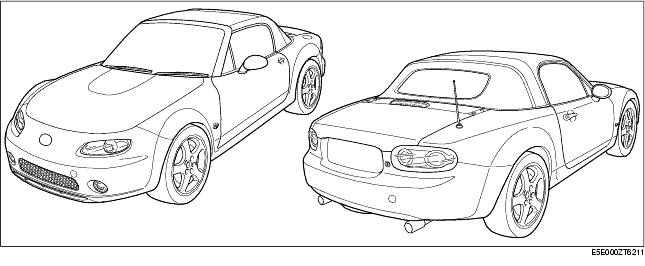
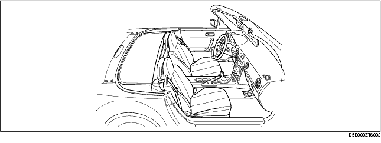
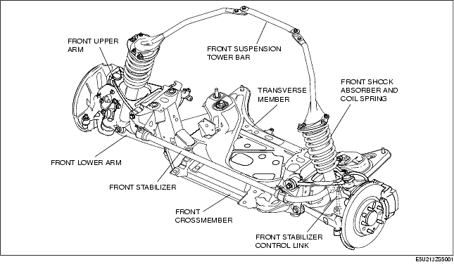
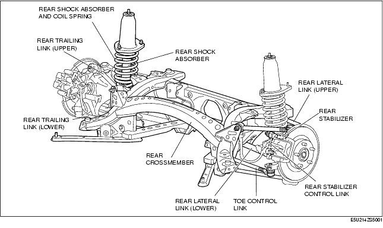
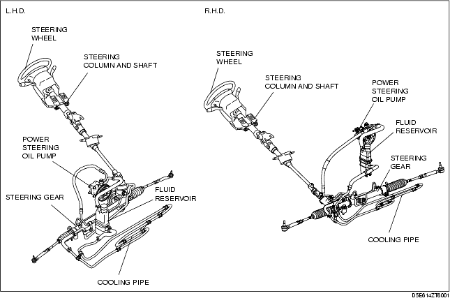
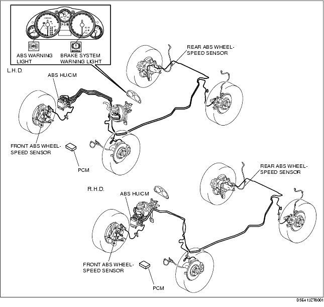
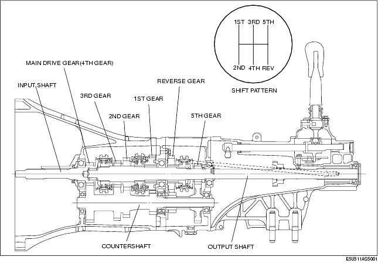
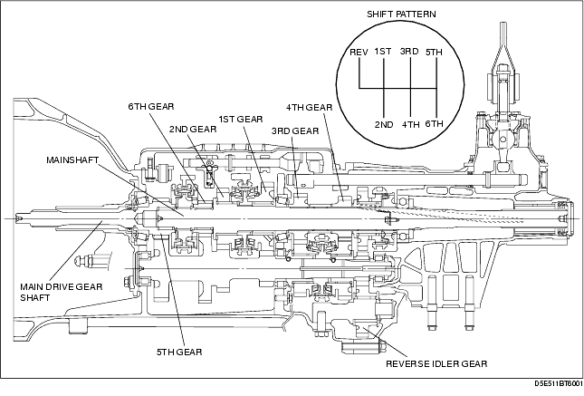
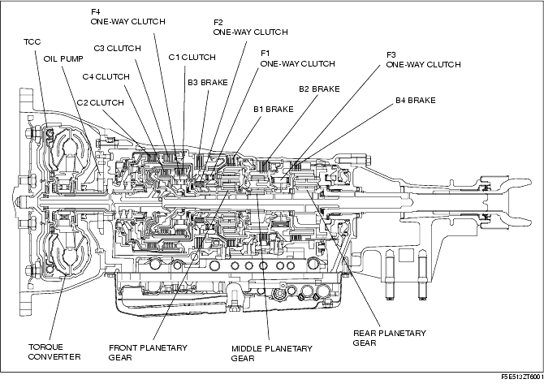

Technical Guide ➭ GENERAL INFORMATION ➭ GENERAL INFORMATION ➭ AIM OF DEVELOPMENT
AIM OF DEVELOPMENT
id000000002300
{: #wp1059776}
Product Concept
• A car in which "oneness between car and driver, and still the one" dynamics and "lots of fun" are carried forward and further evolved for a new generation.
External View

Vehicle Outline
Exterior design
• Fun-to-drive with instinctively attractive styling {: #wp1059855}- A two-fold type convertible top has been adopted for improved ease of opening/closing. {: #wp1059871}• Power retractable hardtop system has been adopted which does not utilize storage space in the trunk compartment because the hardtop is retracted into the deck panel.
Interior design
• A comfortable interior and sporty design incorporating Mazda's inherited DNA {: #wp1059908}- A simple, clean-cut dashboard with a spacious feel has been adopted. {: #wp1059924}- A center panel that integrates module audio and air conditioning controls has been adopted. {: #wp1059939}- An instrument cluster with an emphasized sportiness has been adopted. {: #wp1059949}- Illumination that is both easily visible and comfortable for the eye has been adopted.

Engine
• Engine block {: #wp1059996}- Variable valve timing that optimally adjusts valve timing in accordance with driving conditions has been adopted. (LF (2.0 L) engine) {: #wp1060010}- An aluminum-alloy cylinder head and cylinder block have been adopted. {: #wp1060024}- Lightweight pistons, low-tension piston rings, and shimless tappets have been adopted to minimize friction losses, thereby contributing to improved fuel economy. {: #wp1060035}- An auto-tensioner that automatically adjusts the belt to compensate for stretching has been adopted to minimize maintenance requirements. {: #wp1060046}• Intake, exhaust, control {: #wp1060057}- Weight reduction has been achieved due to a hard-plastic dynamic chamber. {: #wp1060071}- Stable combustion when the engine is cold or lightly loaded along with cleaner exhaust emission and high engine output have been obtained due to the adoption of a variable tumble system. (MT) {: #wp1060086}- High torque is obtained from the lower-middle to the high engine speed ranges due to the adoption of the variable intake air system. {: #wp1060096}- Maximum torque is achieved at all engine speeds due to the adoption of a variable valve timing system that controls intake valve timing in accordance with driving conditions to attain highly efficient air charging. (LF (2.0 L) engine) {: #wp1060107}- An exhaust gas recirculation (EGR) system has been adopted for all models resulting in cleaner exhaust emissions and reduced fuel consumption.
Suspension and steering
• Front suspension
{: #wp1060137}- A newly developed in-wheel-type double-wishbone suspension has been adopted to take full advantage of the low bonnet line enabled by the optimized engine layout.
{: #wp1060151}- The front upper arm and the front lower arm have been lengthened and attached to the highly rigid front crossmember to allow for linear alignment changes during jounce and rebound of the front wheels. Due to this, roadholding and handling performance have been improved.

{: #wp1060168}• Rear suspension
{: #wp1060195}- A multi-link suspension composed of five links has been adopted.
{: #wp1060205}- The links have been lengthened and optimally positioned. Due to this, they constantly provide ideal geometry to respond to external forces applied during driving, improving handling stability and riding comfort, and reducing road noise.

{: #wp1060220}• Power steering
{: #wp1060247}- With the adoption of an integrated mount for the steering gear, handling stability has been improved.
{: #wp1060257}- With the adoption, for all vehicles, of a steering column with a tilt mechanism, operability has been improved.
{: #wp1060271}- With the adoption of a steering shaft with an energy absorbing mechanism, safety has been improved.

Brakes
• The ABS HU/CM, integrating both the hydraulic unit (HU) and control module (CM), has been adopted, resulting in size and weight reduction.
{: #wp1060318}• A semi-conductor element type front ABS wheel-speed sensor has been adopted, improving reliability and reducing size and weight.
{: #wp1060334}• A magnetic encoder type front ABS sensor rotor that is integrated with the wheel hub component has been adopted, improving reliability and reducing size and weight.
{: #wp1060346}• Electronic brakeforce distribution (EBD) control has been adopted, resulting in improved safety and handling stability.

Transmission
• Manual transmission [M15M-D]
{: #wp1060403}- A linked, triple-cone synchronizer mechanism has been adopted for 1st and 2nd gears.
{: #wp1060421}- A linked, double-cone synchronizer mechanism has been adopted for 3rd gears.
{: #wp1060436}- A linked, carbon-cone synchronizer mechanism has been adopted for 4th gears.
{: #wp1060447}- A cam-type reverse lockout mechanism has been adopted.

{: #wp1060458}• Manual transmission [P66M-D]
{: #wp1060486}- A linked, triple-cone synchronizer mechanism has been adopted for 1st, 2nd, 3rd and 4th gears.
{: #wp1060500}- A guide plate type reverse lockout mechanism has been adopted.

{: #wp1060515}• Automatic transmission [SJ6A-EL]
{: #wp1060542}- Newly developed SJ6A-EL type 6-speed AT has been adopted.
{: #wp1060556}- With the adoption of the line pressure solenoid, TCC control solenoid, solenoid for C3 clutch, solenoid for B2 brake, and the linear type solenoid, dynamic shift quality has been realized.

Safety
• An immobilizer system has been adopted. This anti-theft device prevents the engine from being started unless the encrypted identification code, transmitted from a special electronic chip embedded in the key, corresponds with the identification code registered in the vehicle. {: #wp1060609}• World-class collision protection is provided due to the lightweight and highly rigid Mazda Advanced Impact-energy Distribution and Absorption System body. {: #wp1060624}• Single-inflator type air bags that control deployment of the air bags in two stages by detecting the scale of an impact have been adopted for seat passengers. {: #wp1060636}• Side air bags that effectively protect the chest area have been adopted for the seats. {: #wp1060647}• Pre-tensioner and load limiter mechanisms have been adopted for the seat belts. {: #wp1060657}• A steering column designed to collapse horizontally to minimize impact to the driver's head and chest has been adopted. {: #wp1060668}• An intrusion minimizing brake pedal has been adopted.